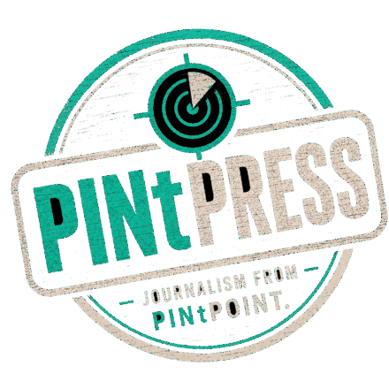
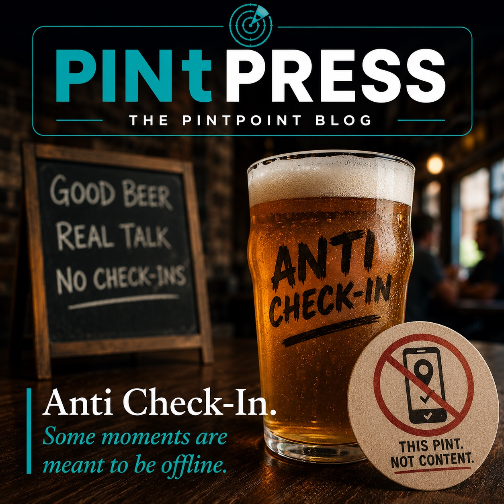
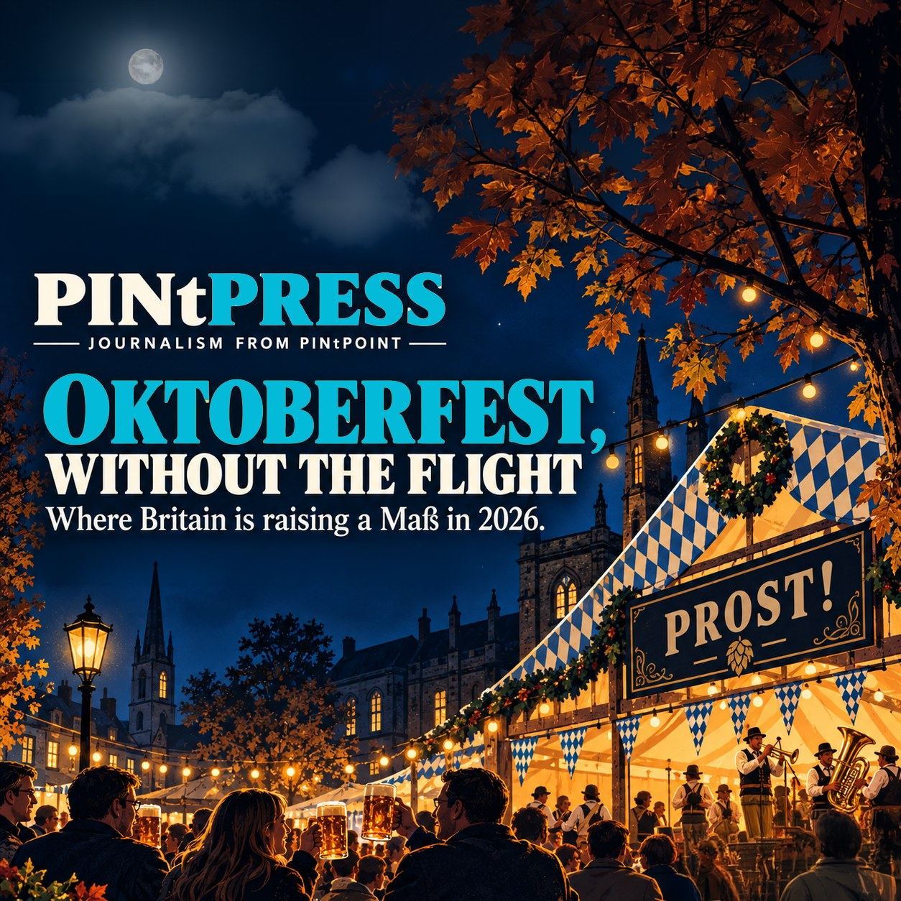
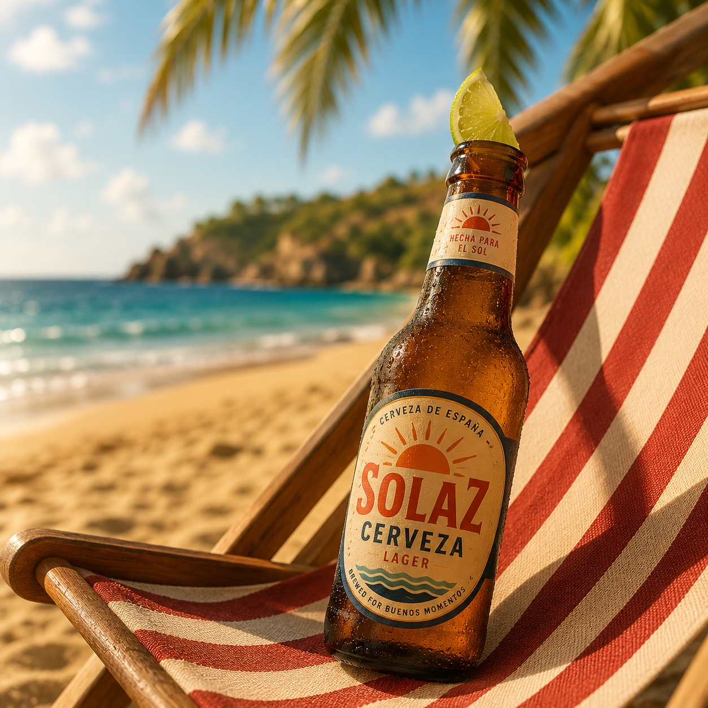
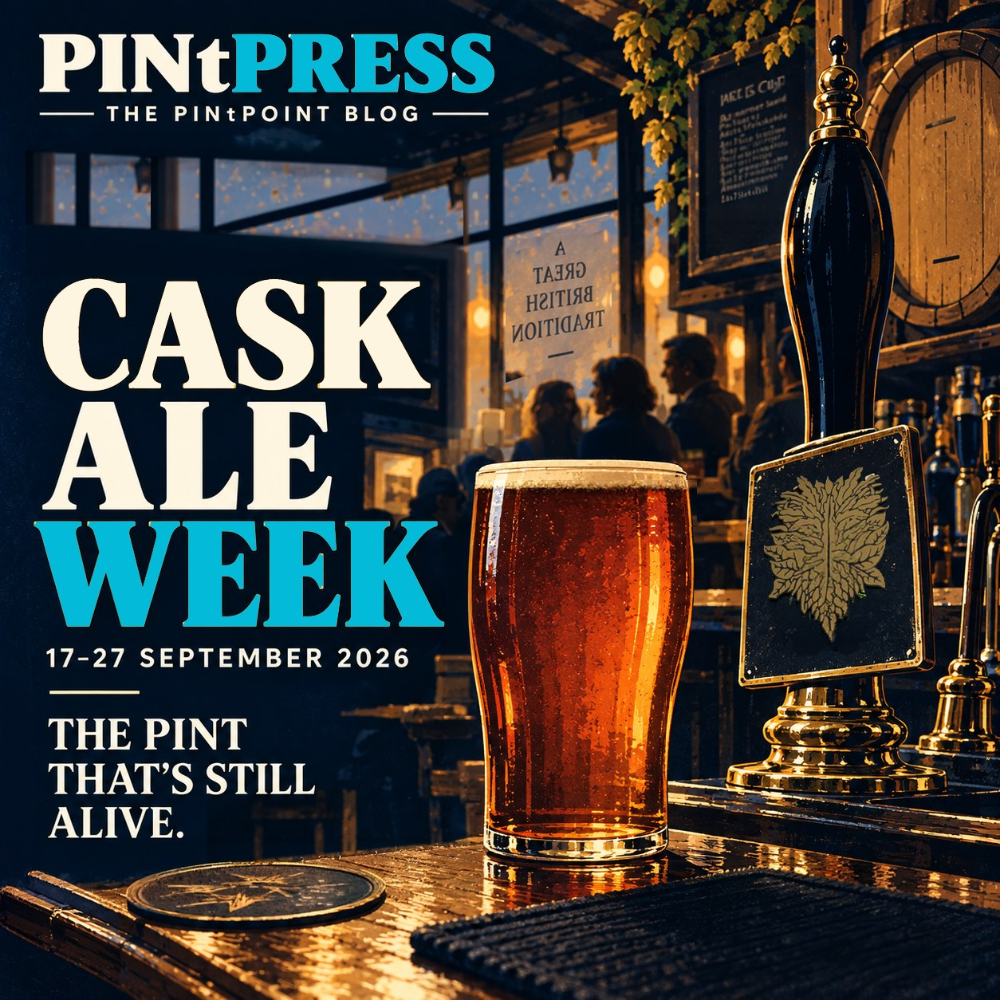

Guides, postcards, essays and notes, written because the pint deserves the thought.
The latest

EssayThe Anti-Check-In: Why We Skip the FeedWhy you can fix a tap list here without telling anybody what you drank.
GuideUK Oktoberfest Events 2026Thirty four British Oktoberfests, and the handful pouring the actual Wiesn beer.
EssayIt's Not Just the Sunshine: Your Holiday* Beer Really Is a Different BeerThe Estrella you drank in Barcelona is not the Estrella they pour in Manchester.
EssayCask Ale Week: the Format Nobody Else Can PourA week built on the one format nobody else can pour.Everything, 50 pieces
- Why Firestone Walker chose Fuller’s yeast
- Tegernseer on Draught, and Where
- Everything Traditional About Oktoberfest Is Younger Than the Tent
- UK Oktoberfest Events 2026
- September is Oktoberfest
- Cask Ale Week: the Format Nobody Else Can Pour
- The Geography of Sobriety
- Old Haunts of the Square Mile
- Ghosts of Baddow Brewery
- These aren't revivals — they're not even spirits
- Davy's — 155 years of sawdust and candles
- Celebrity-Owned Pubs Worth the Pint (Not Just the Autograph)
- The Green Triangle and the Oldest Trademark in British Beer
- The Anti-Check-In: Why We Skip the Feed
- It's Not Just the Sunshine: Your Holiday* Beer Really Is a Different Beer
- The Beer Final We Almost Had: England vs Spain
- Norman Balon: London's Last Great Rude Landlord
- Humphrey Smith: British Beer's Great Awkward Character
- Loaded's World Cup Canon: From Crisps to Vodka and erm, a selection of more questionable items
- Lager'lympics: Loaded Magazine's Lost 1995 Lager World Cup, Found
- Before Kick-Off: Why English Cask Has the Advantage
- Beer World Cup XI: fixtures and results
- Beer World Cup XI: the draw
- World Cup 2026 Stadium Beer Map
- Beerology — The Anatomy of a Pint
- Why PINtPOINT picks a better pint.
- Following the Firkin trail(s)…
- Anchor Brewing's British heritage runs deeper than people realise
- Anchor Brewing looks to be coming back. The 2021 rebrand isn't.
- Under the Hood: How PINtDEXTER Picks Your Pint
- Four pubs a day are closing. The Telegraph's answer is a free pint.
- Save Our Pubs, in one pub.
- From half of British beer to half a percent — what happened to mild
- The sparkler question
- The Whippet: Why This Could Be One of London's Most Interesting Beer Openings of 2026
- Blackhorse Beer Mile turns four
- Radio City turns seven
- Augustiner on Draft, Finally
- 12 Years of Bosko
- Left Field Beer: One of Britain's Best Independent Beer Shops
- Bass Pale Ale: The Red Triangle That Took an English Beer Global
- A Postcard from London: The City That Taught the World to Brew, Then Started Again
- Walking the Ted Lasso pub trail in Richmond
- A Postcard from Melbourne: The City That Built a Craft-Beer Scene on Bars, Not Breweries
- The Drinker's Guide to Hops: What Each Variety Actually Tastes Like
- A Postcard from San Diego: How a Navy Town Became the IPA Capital of the World
- The Chelmsford Beer Mile: A Live Guide to Essex's Best Craft-Beer Crawl
- What's Wrong With Beer Recommendation Systems (And What PINtPOINT Does Differently)
- Beer World Cup XI: forty eight squads
- Radio City 7 Deadly Sins — All Launch Venues